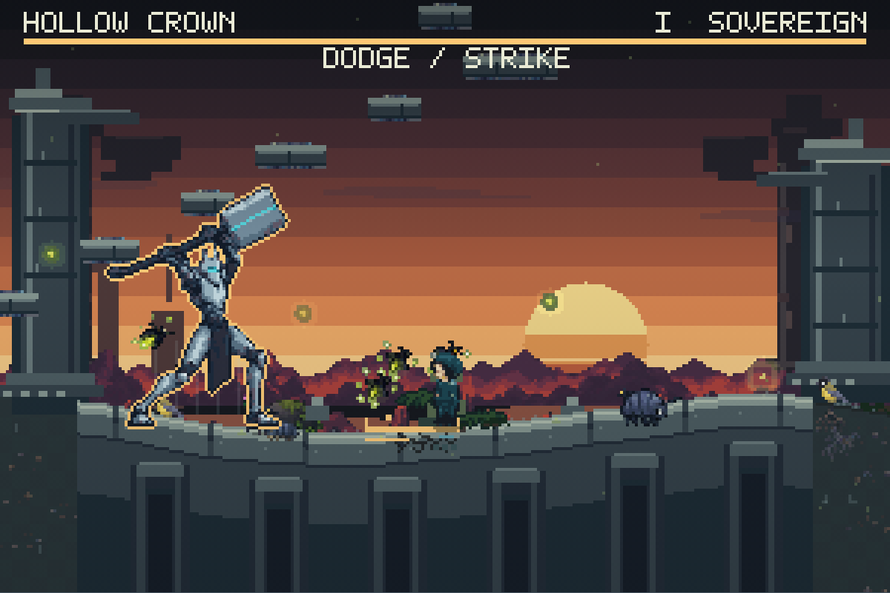
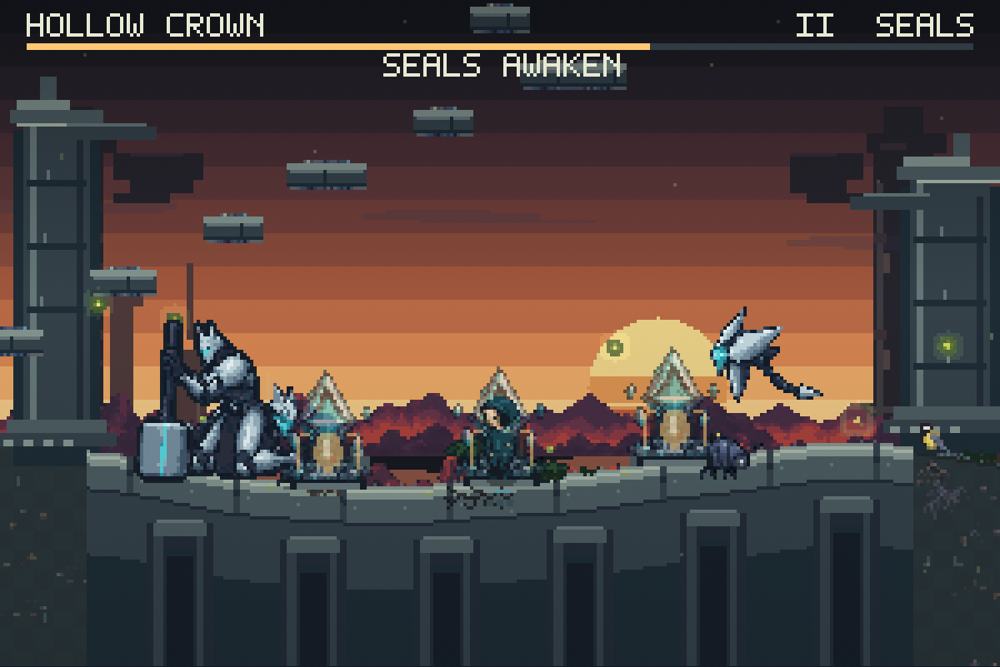
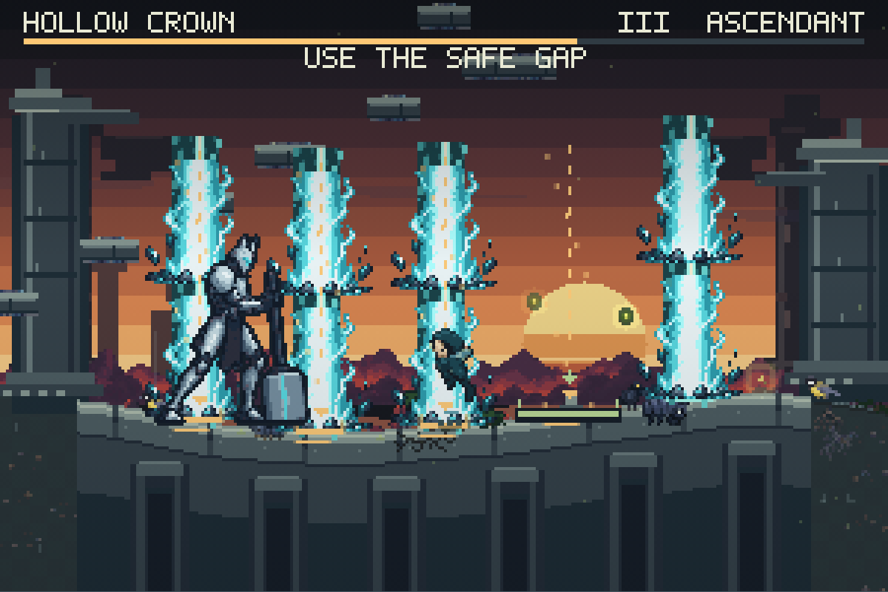
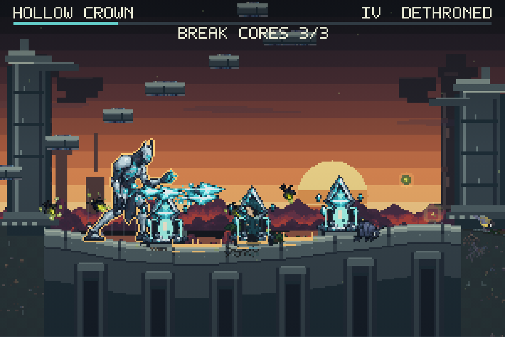
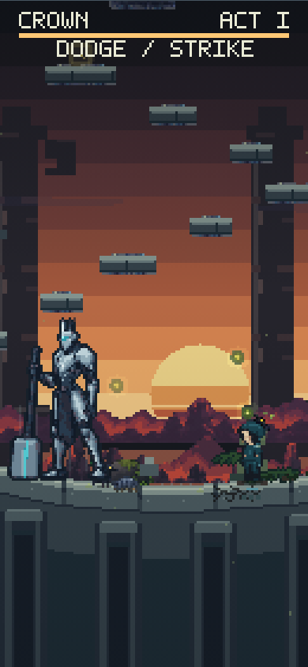
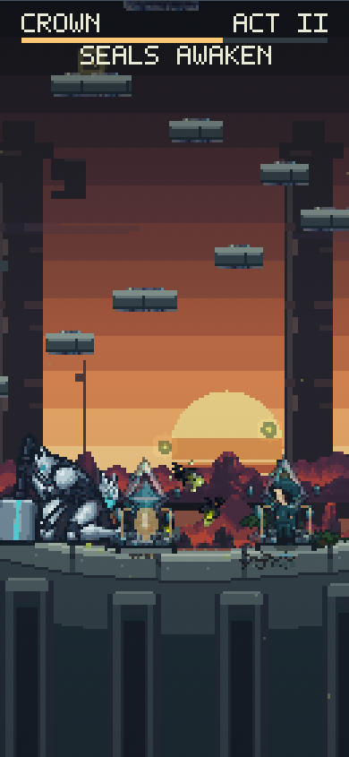
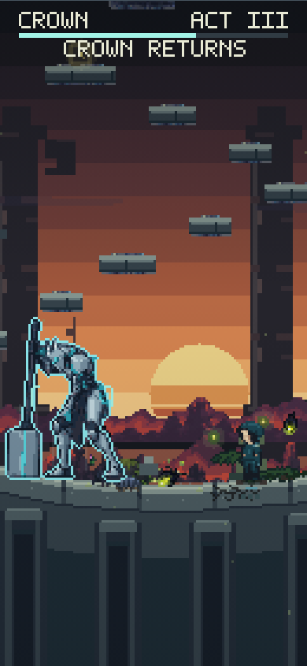
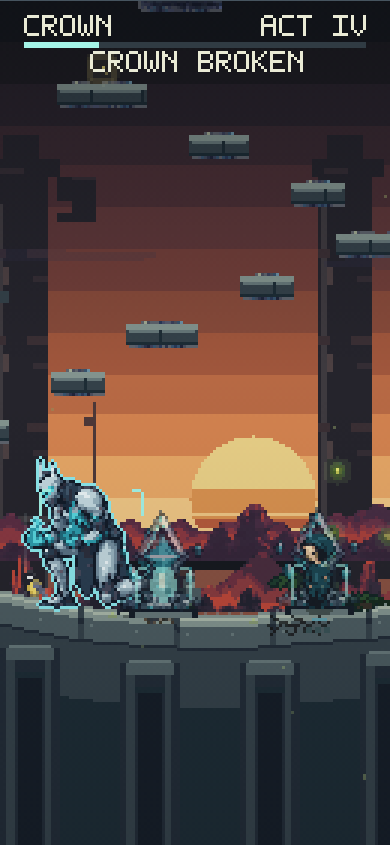

Hollow Crown · the four-act final boss
Actual game captures from the radioactive surface sunrise in Garden20. Native registered sprites, four playable acts and ordinary game controls.




Phone · all four acts



